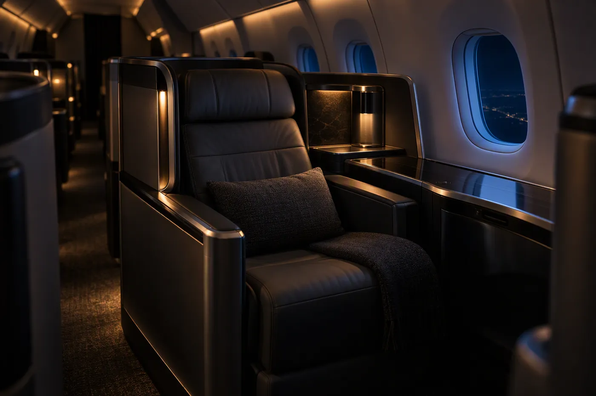

国际名单转化
把国际航班旅客名单转成海关模板，国籍、性别、证件代码自动转换。
进入
02升舱金额计算器
导入 C2 升舱统计表，按岗位比例分配金额，生成人员 × 日期汇总。
进入出港排班表
导入出港航班 Excel，按计离自动分段，分配登机口与负责人。
进入航班日报生成器
左边填写、右边实时预览，导出与官方版式一致的 Word 日报。
进入KN航班出港统计
导入 FIOS 出港表，筛选 KN 航班，算截载时间与订座，导出图片。
进入东上联日数据汇总
导入 FIOS 航班表与指挥长周报 PDF，一键生成东上联表与总表。
进入每日待办
按日期记录每天要做的事，勾掉自动保存，可回看历史、跨日期搜索。
进入早始发正常率测算
只填总班数与延误班数，算出 T1 / T2 / T3 各还差几班正常。
进入值机数据制作
导入 FIOS 出港表，按三家航司分组，自助率自动算。
进入